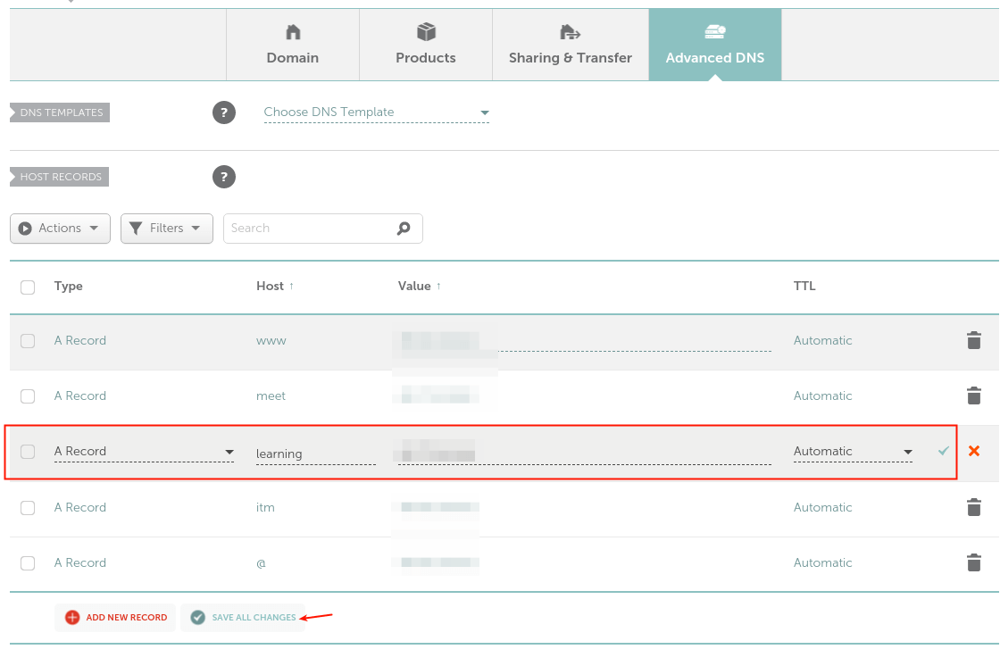
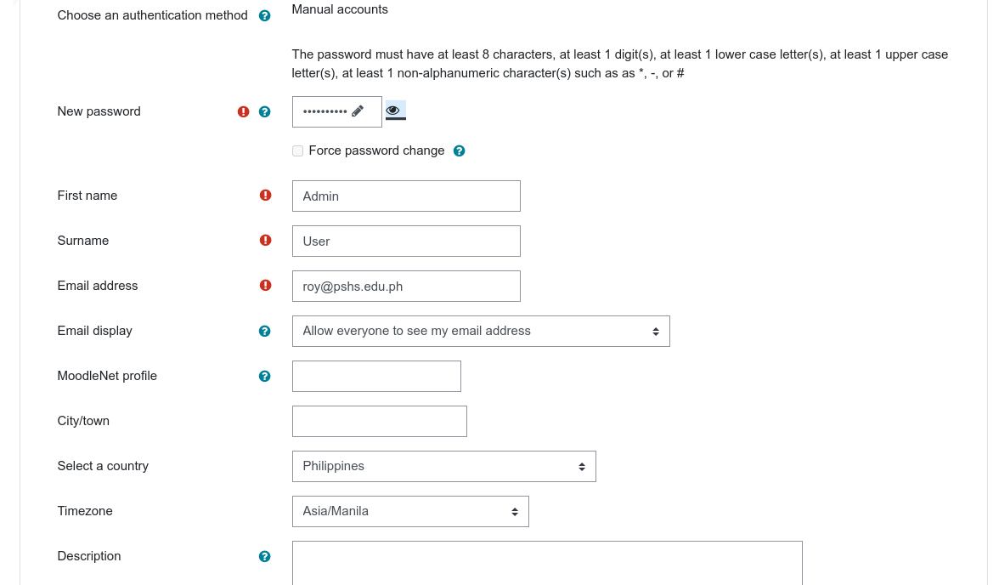

KHub linode migration
Fix Linode
root PSmc!20
sir_roy roypass
$ ssh user@server -o ServerAliveInterval=15
$ HOME/.ssh/config
$ chmod 600 ~/.ssh/config
config:
Host remotehost
HostName remotehost.com
ServerAliveInterval 240
or:
Host *
ServerAliveInterval 240
alternatives for xip.io: * nip.io * sslip.io * localtls
steps once working: * download miscellaneous courses * put in up.alum gdrive
Duplicate Linode
- change the server name in moodle config and in sites-available
- wait a bit for changes to effect
mv moodle code, data, and DB
$ cp -rp
rm moodle code, data, and DB in server2
- setup ssh from server1 to server2
- rsync moodle code, data, and DB dump to server2
-
check that it works.
-
--progress :: estimate progress
- --delete :: delete extraneous
Recommended method
Turn on maintenance mode:
Site Administration > Server > Maintenance Mode
Copy moodledata from the old server to the new server:
NB: It is not necessary to copy the contents of these > directories:
- /moodledata/cache
- /moodledata/localcache
- /moodledata/sessions
- /moodledata/temp
- /moodledata/trashdir
Omitting these files will reduce transfer time substantially.
Check the file permissions of the copied files. The web server needs read and write access.
Copy the Moodle code from the old server to the new server
- check permissions
- the server needs read access
Update config.php with the URL of the new server
Test the copied site
Update links containing wwwroot in the database
Note: use sed
Take the site out of maintenance mode:
- When you are happy all has gone well, set up redirects/make DNS changes if required
rm moodle code, data, and DB in server1
- setup ssh from server2 to server1
- rsync moodle code, data, and DB dump to server1
- check that it works.
Prepare for KHub sync
- install moodle 3.9 with postgresql 11.1 and catalyst objectfs
- check that things are still working
- upgrade to 2cpu 4GB ram linode
- check that things are still working
- increase swap disk
- check that things are still working
- set notification thresholds
Build fresh server
Note: use Build a fresh server
If you want to set up a postgresql database like KHub, you can use: postgresql 11
Set up a DNS record for moodle application
For users to access your Moodle instance you need to create a subdomain for it, thus, you need to create a DNS A record to achieve this. For this guide, our test domain is testprojects.me, so we need to create a subdomain, for example, learning.testprojects.me.
So, log into your domain registrar’s web console and access your domain’s advanced settings, click Add New Record of type A, a host should be learning (or any word of your choice), and value should be the public IP address of your Ubuntu server.

install php
Note: use PHP 7.4
get moodle code
cd /opt
sudo git clone git://git.moodle.org/moodle.git
cd moodle
sudo git branch -a
sudo git branch --track MOODLE_39_STABLE origin/MOODLE_39_STABLE
sudo git checkout MOODLE_39_STABLE
sudo cp -R /opt/moodle /var/www/
sudo mkdir /var/www/moodledata
sudo chown -R www-data /var/www/moodledata
sudo chmod -R 777 /var/www/moodledata
sudo chmod -R 0755 /var/www/moodle
Explanation:
Since we setup a local repository in the previous step, you will copy it to your webroot after any updates and making changes. Having your local repository outside of the webroot, like we have in /opt, you will be able to prepare and stage your upgrades in a more efficient manner. For example, you want to make some changes or add some plug-ins, you would download the plugin and copy it to your local moodle repository. After you have added the plug-in and any other changes you might have made you will need to edit the file located in /opt/moodle/.git/info/exclude. Within that file you want to tell git which files/folders to exclude when it pulls down the updates when you run your next "sudo git pull". An example entry would be the certificate mod located in /opt/moodle/mod/certificate so within the exclude file you want to add "/mod/certificate" below the last comments. You would add additional entries, 1 per line, for each plug-in or file you might have changed. If I were to change the favicon.ico file you would just add "favicon.ico" to the exclude file. Now when you run "sudo git pull" to update moodle to the latest version it will ignore those files and directories and just update the core moodle code. Before copying to your webroot to upgrade you want to make sure and download and copy over the latest versions of the plug-ins you might have added.
setup moodle to use postgresql
$ cd /var/www/moodle/
$ sudo cp config-dist.php config.php
$ sudo vim config.php
$CFG->dbtype = 'pgsql'; // 'pgsql', 'mariadb', 'mysqli', 'sqlsrv' or 'oci'
$CFG->dblibrary = 'native'; // 'native' only at the moment
$CFG->dbhost = 'localhost'; // eg 'localhost' or 'db.isp.com' or IP
$CFG->dbname = 'moodle_db'; // database name, eg moodle
$CFG->dbuser = 'moodle_user'; // your database username
$CFG->dbpass = 'moodle_password'; // your database password
$CFG->prefix = 'mdl_'; // prefix to use for all table names
// 'dbcollation' => 'utf8mb4_unicode_ci',
$CFG->wwwroot = 'http://khub.example.com';
$CFG->dataroot = '/var/www/moodledata';
Set up Nginx
Note: use nginx
Configuring Nginx to work with PHP-FPM
Note: use configure Nginx with PHP-FPM
Configuring NGINX to Serve Moodle Application
For NGINX to server your Moodle site, you need to create a new server block configuration under the NGINX configuration, in the directory /etc/nginx/conf.d/
$ sudo vim /etc/nginx/conf.d/moodle.conf
Copy and paste the following configuration in it, replace backhub.pshsmc.xyz with your subdomain.
server{
listen 80;
server_name backhub.pshsmc.xyz;
root /var/www/html/moodle;
index index.php;
location / {
try_files $uri $uri/ /index.php?$query_string;
}
location ~ ^(.+\.php)(.*)$ {
fastcgi_split_path_info ^(.+\.php)(.*)$;
fastcgi_index index.php;
fastcgi_pass unix:/run/php/php7.4-fpm.sock;
include /etc/nginx/mime.types;
include fastcgi_params;
fastcgi_param PATH_INFO $fastcgi_path_info;
fastcgi_param SCRIPT_FILENAME $document_root$fastcgi_script_name;
}
client_max_body_size 200M;
}
Next, verify that the NGINX configuration is OK after making the above changes, then gracefully restart the NGINX service.
$ sudo nginx -t
$ sudo systemctl reload nginx
Completing Moodle Installation via Web Installer

System paths after install
After installing Moodle you should set the system paths, this will provide better performance VS not setting them. Each entry in Moodle will have it's explanation.
Navigate, on the moodle webpage, to Site Administration > Server > System Paths
Input the following;
Path to du: /usr/bin/du
Path to apsell: /usr/bin/aspell
Path to dot: /usr/bin/dot
Save Changes
Optional if you do not already have an AntiVirus Solution We also installed ClamAV previously
Navigate to Site Administration > Plugins > Antivirus plugins > Manage antivirus plugins
Enable ClamAV antivirus
Click on Settings
Set the proper settings
Save changes
ClamAV Path : /usr/bin/clamscan
Save Changes
Configure php.ini
Check these settings in your php.ini or .htaccess file (if you're using Apache). For settings which use ON/OFF as their values, you can substitute 1 for ON and 0 for OFF if you prefer. If you change php.ini, don't forget to restart the server.
Settings
- memory_limit needs to be at least 96M (although some functions may not work if this low). Moodle will refuse to install if lower. 128M is recommended. Large systems may need an even higher setting.
- session.save_handler needs to be set to FILES.
- file_uploads needs to be ON.
- session.auto_start needs to be OFF.
- The temp folder must be defined and writeable by your webserver user
- Check the error display/logging section. Make sure the settings are appropriate for your server use.
- post_max_size and upload_max_filesize restrict the maximum file size that can be uploaded.
- Check the [mail function] and database section (for your chosen database) to make sure they match your server configuration.
- check max_execution time -> 600
Find the correct php.ini
php -i | grep php.ini
Site admins can display phpinfo in moodle
Settings > Site administration > Server > PHP info
Extensions and libraries
The iconv extension is required. The mbstring extension is required. The curl extension is required (required for networking and web services). The openssl extension is recommended (required for networking and web services). The tokenizer extension is recommended. The xmlrpc extension is recommended (required for networking and web services). The soap extension is recommended (required for web services). The ctype extension is required. The zip extension is required. The gd extension is recommended (required for manipulating images). The simplexml extension is required. The spl extension is required. The pcre extension is required. The dom extension is required. The xml extension is required. The intl extension is recommended. The json extension is required. The appropriate extension for your chosen database is also required. Other PHP extensions may be required to support optional Moodle functionality, especially external authentication and/or enrolment (e.g. LDAP extension for LDAP authentication and the sockets extension for Chat server).
sudo systemctl restart php7.4-fpm.service
sudo systemctl restart nginx
Restoring a postgresql db dump
$ cd
$ pg_dump moodle_db > moodle-postgre-db.sql
$ dropdb moodle_db
$ createdb --owner=moodle_user --encoding=UTF8 moodle_db
$ cat moodle_dump.sql | grep -i "oldserver.com"
Update links containing wwwroot in the database
#sed -e 's/oldserver.com/newserver.com/g' oldmysqldump.sql > newmysqldump.sql
- -e :: script
#sed -i.bak -e 's/oldserver.com/newserver.com/g' mysqldump.sql
- -i.bak :: save the file changes in-place, but backup file first
Check that it worked:
$ cat moodle_db.sql | grep -i "oldserver.com" | head
$ cat moodle_db.sql | grep -i "newserver.com" | head
$ psql -U sir_roy -d moodle_db --set on_error_stop=on -f /opt/backup/backup/moodle_db.sql
Create volume for db files
To get started with a new volume, you'll want to create a filesystem on it:
mkfs.ext4 "/dev/disk/by-id/scsi-0Linode_Volume_ext-drive"
Once the volume has a filesystem, you can create a mountpoint for it:
mkdir "/mnt/ext-drive"
Then you can mount the new volume:
mount "/dev/disk/by-id/scsi-0Linode_Volume_ext-drive" "/mnt/ext-drive"
If you want the volume to automatically mount every time your Linode boots, you'll want to add a line like the following to your /etc/fstab file:
/dev/disk/by-id/scsi-0Linode_Volume_ext-drive /mnt/ext-drive ext4 defaults,noatime,nofail 0 2
Setting Up HTTPS on Moodle Application Using Let’s Encrypt
Optimize server for moodle
- set up site backup
- install LBS for baseline monitoring on server
- install firefox YSlow tool for client
- consider stress testing: Load Test Your Web Server with Siege
- consider install moodle plugin: Edwiser Site Monitor
If still slow
- consider transfer to Cloudways for advance cache solutions
After returning to KHub
- consider updating and upgrading ubuntu server
- consider doing postgresql 11 streaming replication
Plan D :)
moosh
setup moosh:
Note: use moosh - Moodle Shell
https://moosh-online.com/commands/
Very Useful Websites
- Namecheap Private Email records for domains with third-party DNS
- Configure Your Linode for Reverse DNS (rDNS)
- Domain Name Registration Data Lookup
- goodls
- CloudFlare
Appendix
MariaDB backup
Note: use MariaDB backup